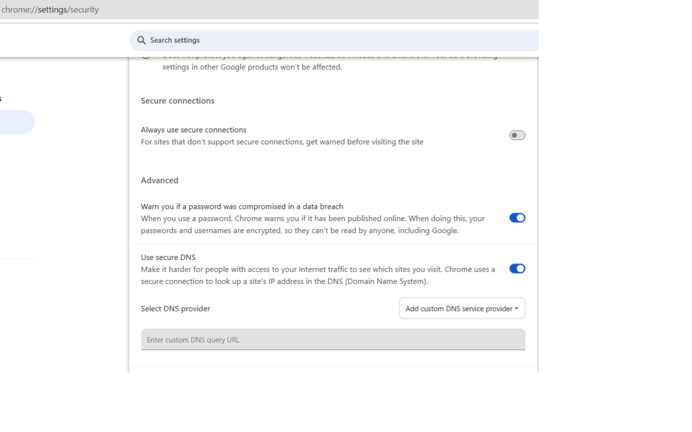

Technitium DNS Server
..
Open the Settings app on your Android device.
Select Network & Internet.
Select Private DNS.
Select Private DNS provider hostname
Enter:
Press Save
Right click on the Network icon (Wired or WiFi) in the system tray and click Open Network & Internet Settings.
Click Change adapter options
Select Properties.
Select Internet Protocol Version 4 (TCP/IPv4). Then, click Properties.
Select Use the following DNS server addresses.
Enter:
Click OK.
IPv6
If your networks supports IPv6, it's also recommended to configure the IPv6 addresses.
Select Internet Protocol Version 6 (TCP/IPv6)
Click Properties.
Select Use the following DNS server addresses.
Enter:
Click OK.

Download the profile using Safari on your iOS device.
This will not work if downloaded with a different browser.
Open Settings > Profile Downloaded and select the new profile
Click Install.
Enter your phone's passcode.
Click Apple menu > System Preferences > Network.
If the lock icon in the lower left-hand corner of the window is locked, click the icon to make changes, and when prompted to authenticate, enter your password.
Select the connection for which you want to configure DNS. For example:
To change the settings for a Wi-Fi connection, select Wi-Fi, and click Advanced.
To change the settings for an Ethernet connection, select Built-In Ethernet, and click Advanced.
Select the DNS tab.
Click + to replace any listed addresses with the DNS IP address:
Click OK > Apply.
Click the "more" button (3 vertical dots) in the top right corner of Chrome.
Select "Settings...".
Click "Privacy and Security" in the right side panel.
Click on "Security"
Scroll down to the "Advanced" section.
Click "Use secure DNS" switch to enable.
Enter

Note! This will work only for Chrome, all other applications on your computer will keep using the default DNS server configured in your network settings.
. To configure Firefox, go to Settings > Privacy & Security and scroll down to find DNS over HTTPS section. Click on the Max Protection option, select Custom option in the Choose provider drop down box, and enter
How to change the DNS servers on a router to
We do not have the resources to list every single make and model of the router on the market.
In general, the instructions below should suffice for most routers.
1. Open the preferences for your router. Often, the preferences are set in your web browser, via a URL with numbers (example: http://192.168.0.1 or http://192.168.1.1). You may need a password.
2. Find the DNS server settings. Look for the letters DNS next to a field that allows two or three sets of numbers, each broken into four groups of one to three numbers.
3. Put in the server addresses as your DNS server settings and save/apply.
4. Check your Settings. Once you have configured your DNS, check the router has retained the settings.